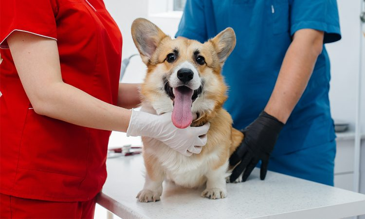

Cómo cuidar a un perro después de la esterilización

Los animales son una gran compañía para los seres humanos.
Desde hace mucho tiempo, los dueños que eligen adoptarlos tienen en
cuenta muchísimas cuestiones en torno a su salud para así integrarlos
definitivamente a la familia. En el caso de los perros, como así
también los gatos, el hecho de mantenerlos esterilizados contribuye a
su desarrollo.
En términos teóricos, al esterilizar al animal se mantienen los
órganos sexuales y esto favorecerá a su conducta una vez que pase el
quirófano. Pero, antes de avanzar con esta operación, el perro deberá
atravesar un proceso que comprenderá varios estudios médicos, como así
también una entrevista con el dueño, quien deberá informar el estado
general de su mascota, si fue adoptado y cómo es su alimentación
diaria, entre otras cuestiones.
Después de que un perro ha sido esterilizado, es importante
proporcionarle cuidados especiales para garantizar una recuperación
segura y cómoda. Aquí hay algunos consejos sobre cómo cuidar a un
perro después de la esterilización:
-
Descanso y limitación de actividad: Tu perro necesitará
descansar y limitar su actividad física durante al menos
unos días después de la cirugía. Evita que corra, salte o
realice actividades extenuantes para permitir que su cuerpo
se recupere.
-
Control del ejercicio: Sigue las recomendaciones de tu veterinario sobre cuánto ejercicio es apropiado para tu perro durante el período de recuperación. Es posible que debas limitar los paseos y el juego vigoroso durante un tiempo.
-
Alimentación adecuada: Proporciona a tu perro una dieta equilibrada y adecuada para ayudar en su recuperación. Tu veterinario puede recomendarte un tipo específico de alimento o ajustar la cantidad de comida según las necesidades de tu perro.
-
Medicación y cuidado de heridas: Si tu veterinario ha recetado medicamentos para el dolor o antibióticos, asegúrate de administrarlos según las instrucciones. También es importante mantener limpia y seca el área de la incisión siguiendo las indicaciones del veterinario.
-
Evitar lamido excesivo: Algunos perros pueden lamerse excesivamente la incisión, lo que puede causar irritación o infección. Si tu perro muestra tendencia a lamerse la incisión, consulta con tu veterinario sobre si es necesario usar un collar isabelino para evitar que se lama.
-
Supervisión: Mantén un ojo atento sobre tu perro durante el período de recuperación para detectar cualquier signo de complicaciones, como enrojecimiento, hinchazón, secreción o comportamiento anormal. Si notas algo preocupante, contacta a tu veterinario de inmediato.